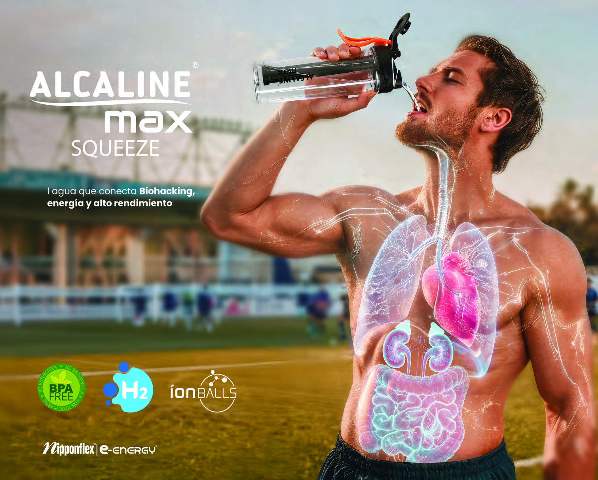
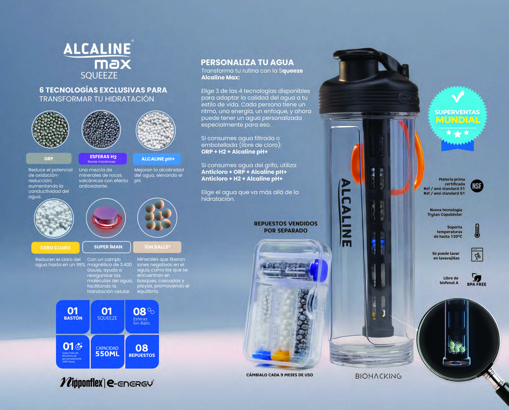
Más que un recipiente, es un complemento para quienes buscan optimizar sus hábitos de hidratación. Su tecnología de acondicionamiento y alcalinización del agua lo convierte en un aliado ideal para el hogar, la oficina, el deporte y las actividades diarias.
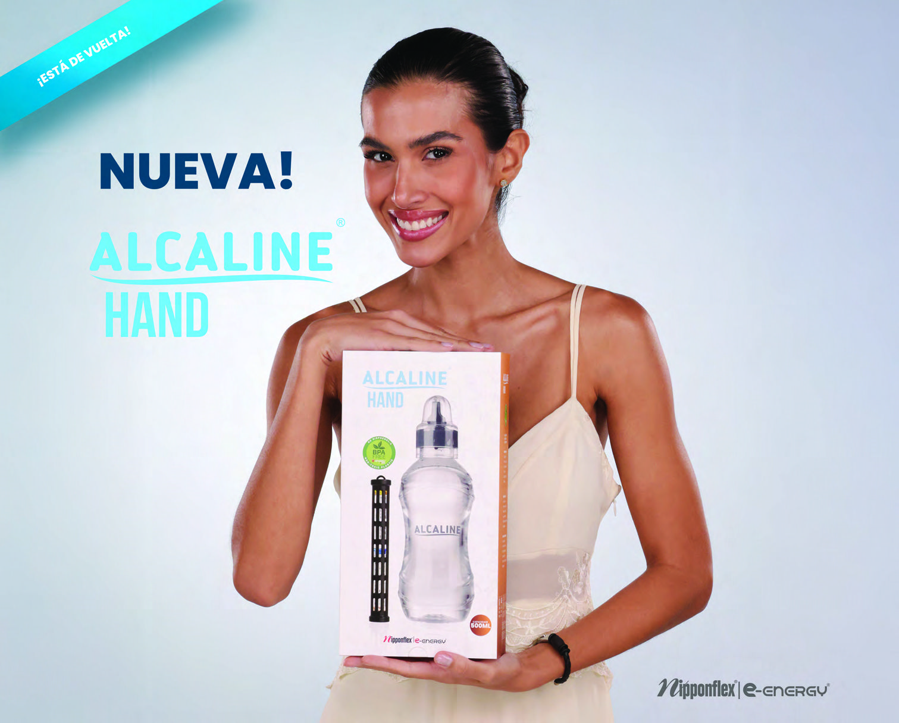
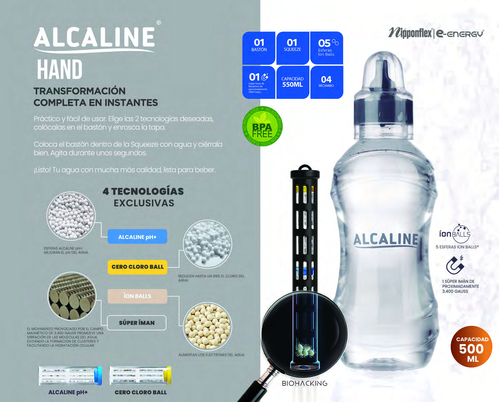
Tecnología de hidratación avanzada en la palma de tu mano. Su diseño innovador permite llevar los beneficios de la alcalinización y optimización del agua dondequiera que vayas, complementando una rutina orientada al bienestar integral.
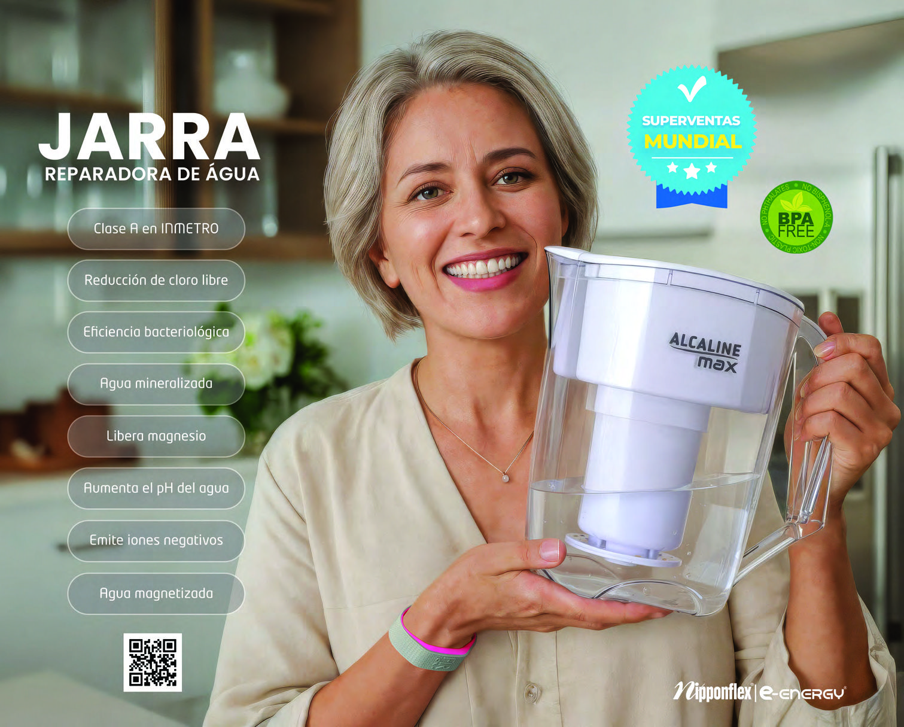
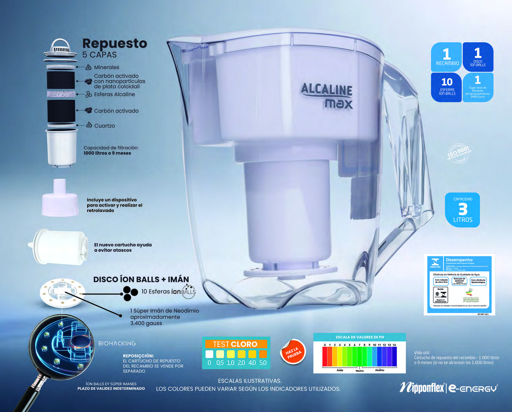
La evolución de la hidratación inteligente. Integra tecnología especializada para el acondicionamiento del agua, proporcionando una experiencia más conveniente y alineada con un estilo de vida orientado al bienestar y la salud integral.
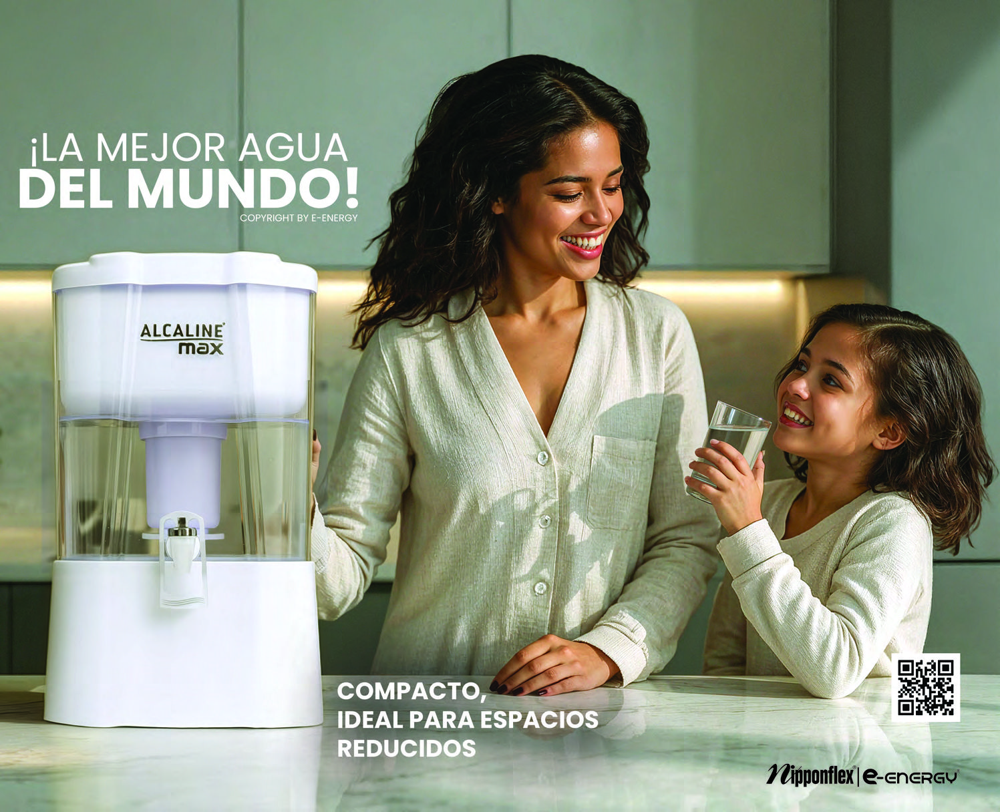
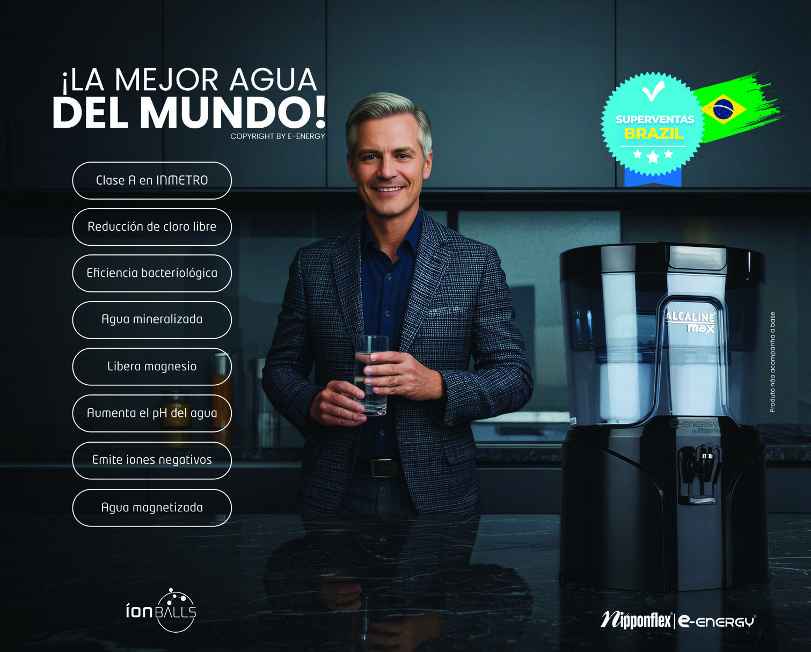
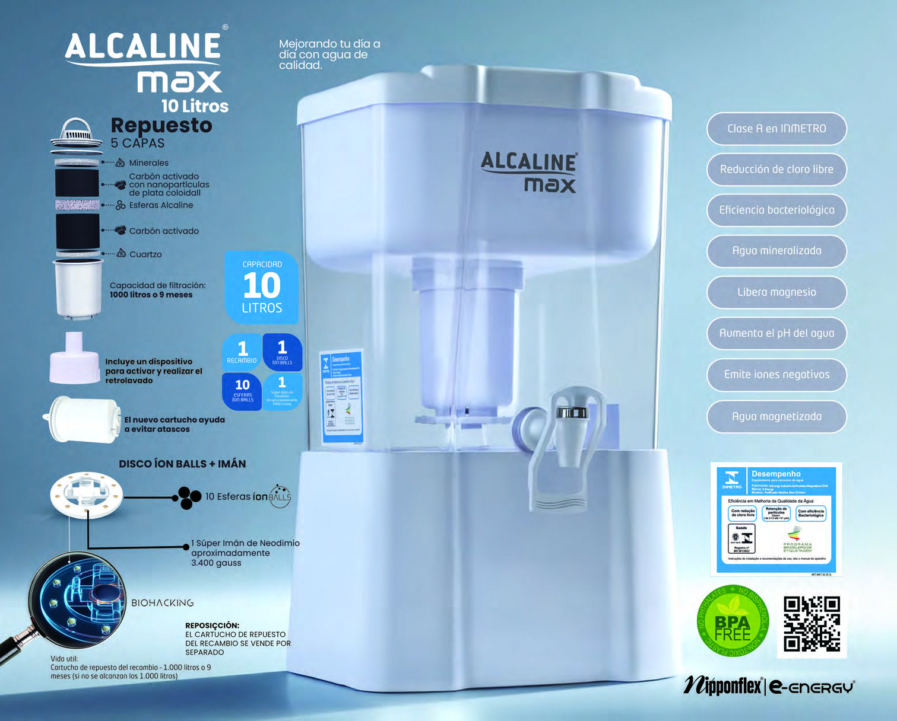
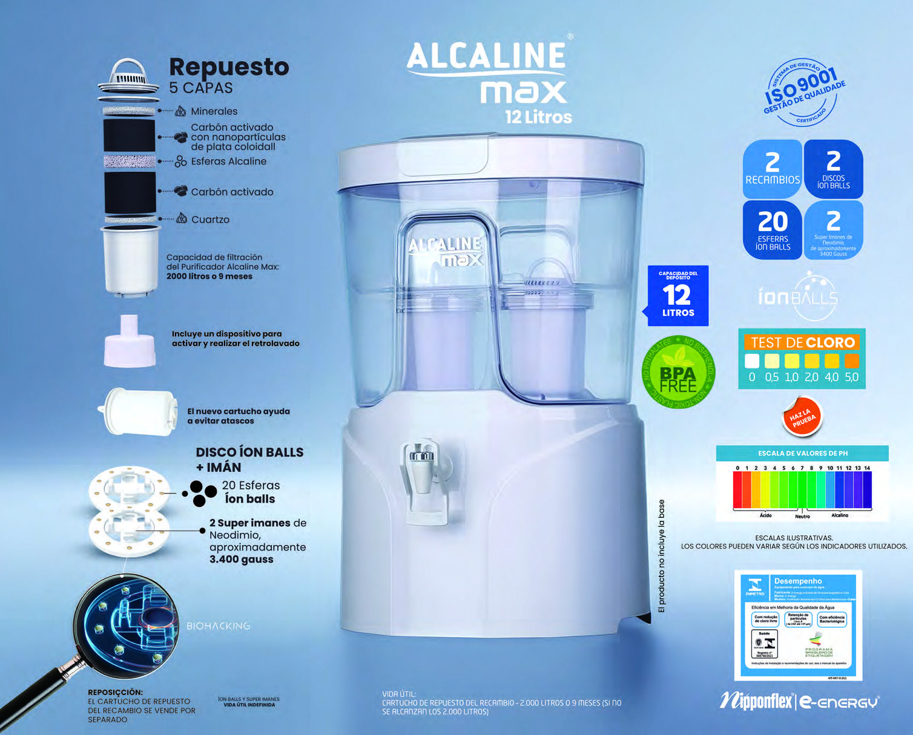
Equipo de alto rendimiento desarrollado para optimizar el agua en mayores volúmenes, combinando innovación, comodidad y eficiencia. Disponible en diferentes capacidades para ajustarse a las necesidades de cada usuario, desde el hogar hasta aplicaciones de mayor demanda.
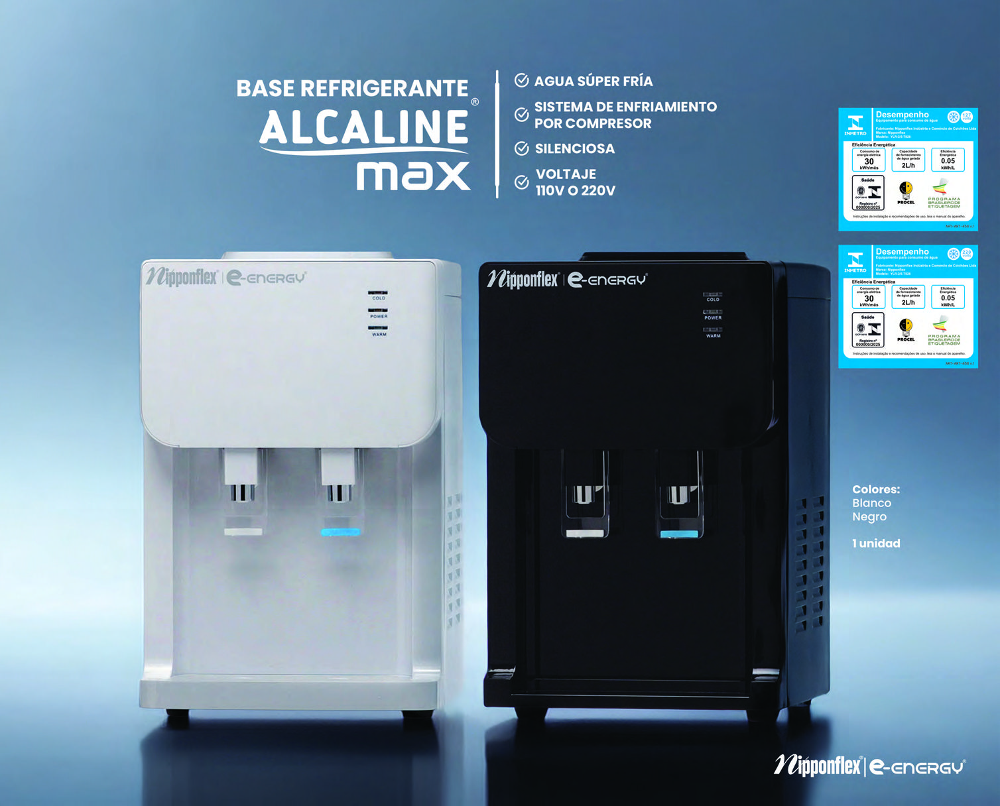
Sistema diseñado para complementar los equipos Alcaline Max, proporcionando una plataforma funcional que combina estabilidad, practicidad y tecnología para el acondicionamiento del agua. Además, incorpora un sistema de enfriamiento que permite dispensar agua completamente fría, ofreciendo una experiencia de hidratación más refrescante y cómoda en cualquier momento.
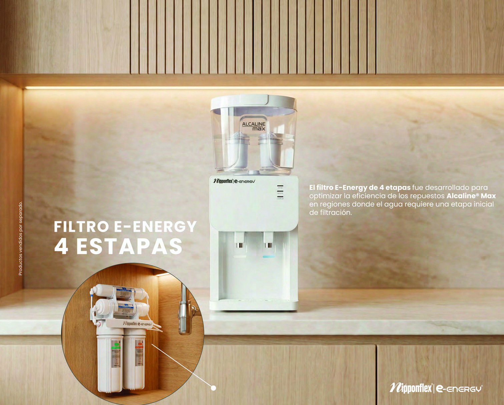
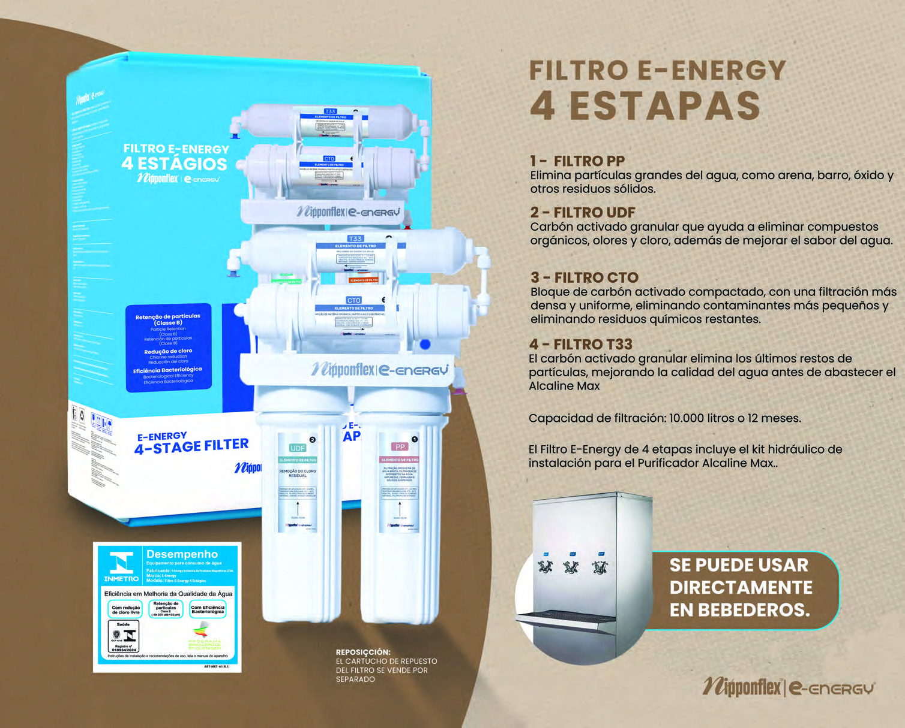
Solución diseñada para el tratamiento y acondicionamiento del agua, integrando tecnologías que favorecen una experiencia de hidratación más cómoda y eficiente. Su sistema está pensado para complementar estilos de vida orientados al bienestar, la salud y el consumo responsable de agua.